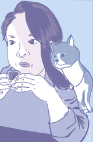

BIENVENUE
Welcome to Winyee's Project Space
~*~*~*~*~*~*~*~*~*~*~*~*~*~*~*~*~*~*~
I'm Liz - a part-time artist, part-time corporate cog, and full-time hobbyist.
Here you will discover the breadth and wealth of my art, projects, and thoughts. I try to keep my day job in the backburner after hours. :)
~*~*~*~*~*~*~*~*~*~*~*~*~*~*~*~*~*~*~
New here? Check out my about me to get a sense of what this page has to offer.
Been here before? Below is the latest from my
changelog.
LATEST CHANGELOG
Last Update: 2022-04-01